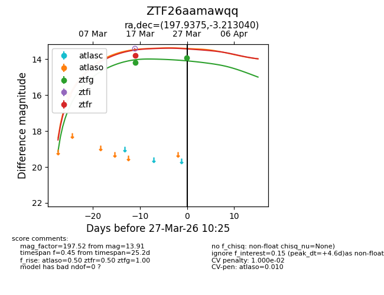
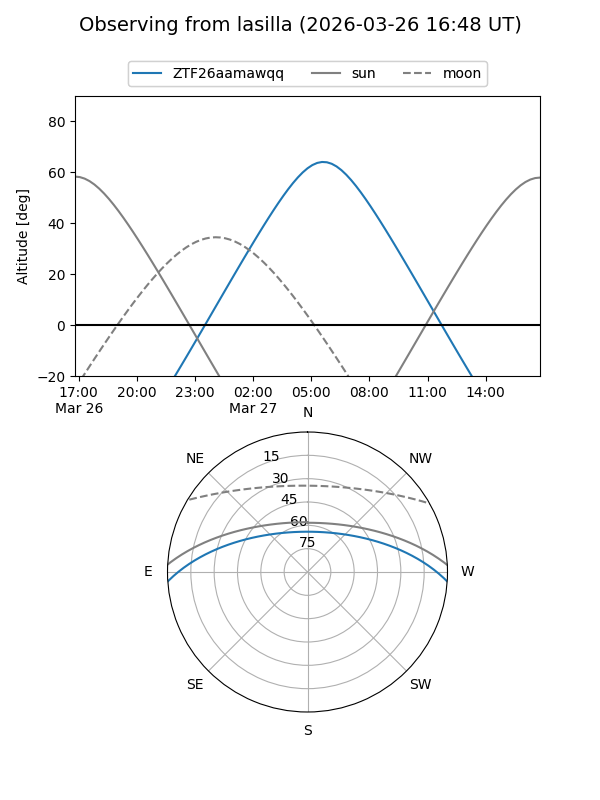
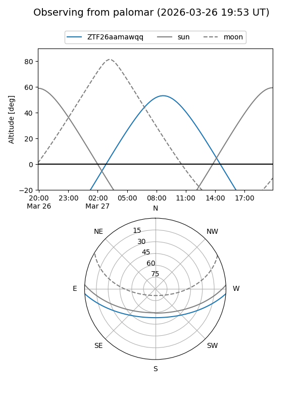
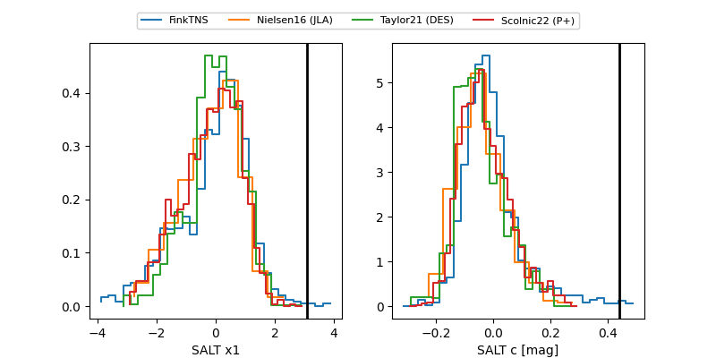

ZTF26aamawqq
Target ZTF26aamawqq at 2026-03-27 10:28
Aliases and brokers:
FINK: link
Lasair: link
ALeRCE: link
alt names
ZTF26aamawqq (ztf,fink_ztf)
Coordinates:
equatorial (ra, dec) = 197.9375,-3.21304
equatorial (HMS+DMS) = 13:11:44.99,-03:12:46.95
galactic (l, b) = (312.8895,+59.26544)
Flags:
likely cv
Photometry:
last atlaso=15.98, ztfg=13.91, ztfr=13.78
1 atlaso, 2 ztfg, 1 ztfr detections
Lightcurve

Visibility


Additional plots
